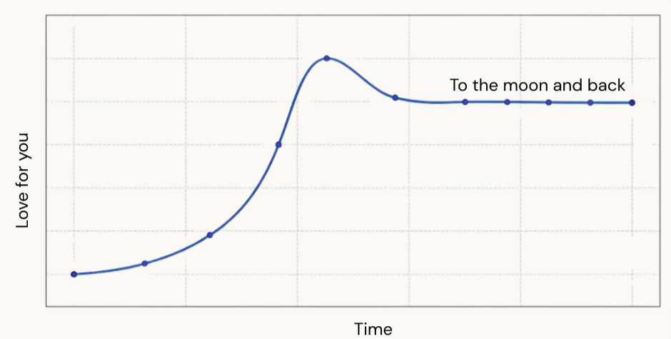

Dear Sheela,
First of all a very Happy Birthday to you. I really wish the instagram bug reappears and wish you for a month or long.
As I told in the literature review, I don't know most of the things happened in your life, and when I turned to a stranger or rather even far from a stranger to you, but it does hurt a lot.
I am really happy to see your happy phase through the socials and seems you are enjoying a lot, and only sad part is that I wish I couldn't be there in those moments.
Really happy to see achieve things that you want be it dance, running, yoga routine, enjoying the family time etc.
Life has just been a whole lot of things to me too, I really miss you. I know its completely my probelem to deal with but still everyday I think what did I do wrong? what has happened that made me go to a place a I am not even a stranger to you.
There are time that I am mostly feel alone and I thought that someone would be around. I really felt that from you, a person who could understand me and be there in the highs and lows.
I know I telling this for the n th time but I really really Love You. I know that you are in that phase where you are focused on yourself, bettering and being the best version and enjoying life. I know I am repeating this may be like annoying you, but its only way that I can express the feeling for you.
Oh shit the paper doesn't have a graph, so let me do that so that the paper doesn't get rejected.

As I said I really happy to see the happy phase of you, and you really mean to have everything of it. Stay happy. You are the best. Dance it out, run it through and be the person you are.
I don't know if you remember I had called you moon, and by that I mean you are the one you shows light in the darkness to me, I would like to be a a sun someday providing the light you need, a star somedays upthere hidden due to light from you and someday I want to be a simple human who is just happy to be seeing the moon.
As I always say I am just a text, call or just a flight a way. Anytime available to you. Love you to the moon and back.